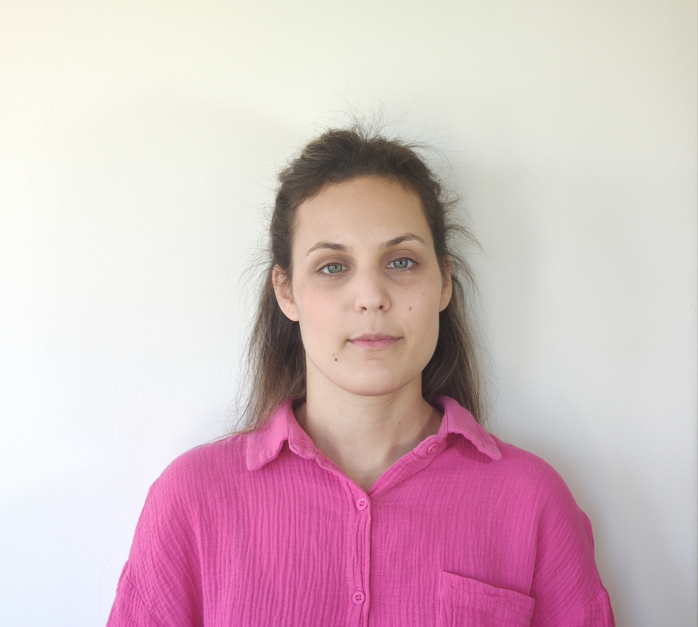

Βιογραφικό Σημείωμα
Βουτρυά Χρυσούλα

Εκπαίδευση
2019 – έως σήμερα: Φοιτήτρια του τμήματος Πληροφορικής του Ελληνικού Ανοιχτού Πανεπιστημίου
2019 The Fundamentals of Digital Marketing – Google Digital Garage
2018 Ειδίκευση στην Αθλητική Διατροφή για την Μεγιστοποίηση της Απόδοσης υπό την αιγίδα της “Διεθνούς Κοινότητας Αθλητικής Διατροφής” "ΙSSN" των ΗΠΑ.
2018 Ειδίκευση στην Κλινική Διατροφή, Καποδιστριακό Πανεπιστήμιο Αθηνών.
2015 Απόφοιτη του τμήματος Διατροφής και Διαιτολογίας, της σχολής Τεχνολογίας Γεωπονίας και Τεχνολογίας Τροφίμων και Διατροφής, ΑΤΕΙ Θεσσαλονίκης. (Κάτοχος άδειας ασκήσεως επαγγέλματος.)
2014 Εξάμηνη πρακτική άσκηση στο εργαστήριο ελέγχου τροφίμων «Πέτρος Ανδρουλάκης & Συνεργάτες».
Εργασιακή Εμπειρία
07/2022 - έως σήμερα Υπάλληλος ΙΤ
Union Optic - Shamir - EssilorLuxottica
Αντικείμενο εργασίας: Υποστήριξη Υπαλλήλων (Hardware:pc, εκτυπωτές, περιφερειακά, tablet, κινητά), Software:windows, office365, Στήσιμο υπολογιστή για νέο χρήστη), Υποστήριξη Πελατών (εγκατάσταση, επίδειξη και λύση προβλημάτων σε ordering client και λογισμικό υπολογισμού οφθαλμολογικών μετρήσεων), Γραφιστικά (CorelDraw, Adobe Illustrator), Social Media(Instagram, Facebook, Hubspot), Παρουσιάσεις(Powerpoint), Μεταφράσεις απο Αγγλικά, Υποστήριξη Ιστοσελίδας(Wordpress), Δημιουργία απαραίτητων αρχείων για μηχανήματα εγχάραξης με Laser (Schneider, Keppets, LaderOp), Δημιουργία απαραίτηταν αρχείων για δημιουργία στάμπας με Teco, Atlantis ERP, SSMS
07/2019 – 07/2022 Υπάλληλος Γραφείου
Union Optic - Shamir - EssilorLuxottica
Αντικείμενο εργασίας: Τιμολόγηση, προετοιμασία και αποστολή παραγγελιών, υπεύθυνη αποθήκης, τηλεφωνική εξυπηρέτηση πελατών
09/2018 – 07/2019 Διαιτολόγος – Διατροφολόγος
BODYfitStore, Θέρμη
Αντικείμενο εργασίας: Υπεύθυνη διαιτολογικού γραφείου – Διαχείριση πελατολογίου / συμβολαίων πελατών, λογισμικού erp,στήσιμο καταστήματος συμπληρωμάτων διατροφής, Πώληση – ταμείο – παραγγελίες – απογραφή συμπληρωμάτων διατροφής.
01/2017 – 09/2017 Γραμματειακή Υποστήριξη – Τιμολόγηση – Ετικέτες Τροφίμων
Εργαστήριο Ελέγχου Τροφίμων «Ανδρουλάκης Πέτρος & Συνεργάτες»
Αντικείμενο εργασίας: Διαχείριση εσόδων – εξόδων, έκδοση τιμολογίων, διαχείριση email, επικοινωνία με πελάτες, διαχείριση αναλώσιμων, παραλαβή και καταχώρηση δειγμάτων, βασική εκπαίδευση στις ετικέτες τροφίμων.
11/2012 – 12/2016 Πωλήτρια και Υπεύθυνη Αλλαγών Τιμών Β’
Εταιρία πώλησης παιχνιδιών – βρεφικών ειδών – JUMBO (κατάστημα Θεσσαλονίκης, πάρκο Φλόριντα ΙΚΕΑ)
Αντικείμενο εργασίας ως πωλήτρια: Διαχείριση προϊόντων, διαχείριση αποθεμάτων, εξυπηρέτηση πελατών, κάποιες γνώσεις στησίματος.
Αντικείμενο εργασίας ως υπεύθυνη αλλαγών τιμών: Υπεύθυνη για τις ημερήσιες αλλαγές τιμών των προϊόντων, ενημέρωση υπολογιστών τσέπης προσωπικού, απογραφές, ελλείματα, πλεονάσματα, στήσιμο τιμών.
04/2011-09/2011 Σερβιτόρα σε μπουφέ, Υποδοχή
Ζαχαροπλαστεία PLAISIR
Αντικείμενο εργασίας: Προετοιμασία χώρου δεξίωσης και φαγητού, υποδοχή, σέρβις.
Δεξιότητες
Γλώσσες
- Αγγλικά: Επίπεδο Γ2 - Proficiency
- Γερμανικά: Επίπεδο Β1 - Zertifikat
Υπολογιστές
- Λειτουργικά συστήματα: Windows
- Office 365
- Atlantis ERP
- CorelDraw
- Adobe Illustrator
- SQL βασικά
Οδήγηση
- Δίπλωμα οδήγησης Β’ κατηγορίας